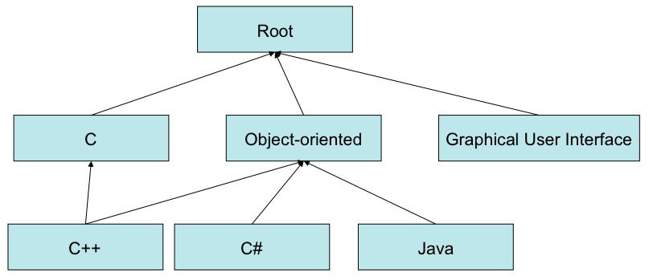

Modularization Concept
A quality model can be refined by further quality models that cover a specific topic.
The main purpose of modularization is to separate different technologies/methodologies/paradigms
(i.e. programming languages), while keeping their commonalities together.
Quality models can hierarchically depend on other models (see the example of the base model below).
Depending models can for instance extend the quality model of the root model
by refining factors with new specific factors,
by measuring factors with new measures,
by adding new evaluations for factors or
by introducing new instruments and tools for existing measures.
Every model element has an Qualtiy Model attribute to specify, to which quality model
this element shall belong. By changing the model it is possible to move an element from one
quality model into another one. However, there are possible restrictions for this action because of dependencies.
So the list with possible models can be limited.
